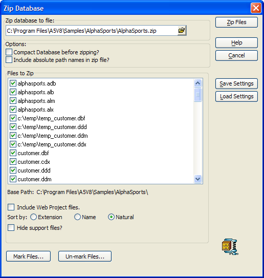

Zip Tables, Sets, and Workspaces
You can zip tables, sets, and entire workspaces from within Alpha Anywhere.
Select Tools > Zip Workspace.
Optionally, change the name or folder location of the zip file to create.
Optionally, check Compact Workspace before zipping. This potentially reduces the size of the zip file.
Optionally, check Include absolute path names in zip file. This causes the files to be upzipped to the same location they came from and may be a problem if unzipped on a different computer.
By default Alpha Anywhere includes all related files (i.e., indexes, dictionaries, and Help files) in the zip file. For example, when you zip a set, Alpha Five automatically includes all of the tables that comprise the set. However, you can select files to include and exclude.
Optionally, sort the files in the list box by Extension, Name, or Natural (the order in which the files appear in the workspace).
Optionally, check Hide support files. Alpha Anywhere will show the .dbf file, but hide the corresponding .fpt, .cdx, .ddd, .ddm and .ddx files.
Optionally, click the Mark Files and Un-mark Files buttons mark or un-mark all files.
Optionally, click Save Settings to save the operation with a name.
Optionally, click Load Settings to load a previously saved zip operation.
Click Zip Files to create the zip file.

See Also
ZIP_FILES(), Run a Custom Backup Job